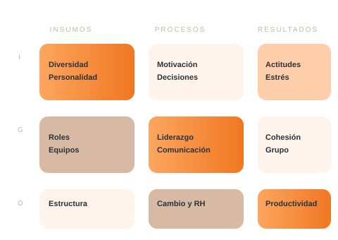

Fuente única y procedencia
El Excel maestro editable conserva los IDs originales y normalizados, las filas de origen y el contenedor histórico. El navegador consulta una exportación derivada.
Un mapa de investigación económica y empresarial de Yucatán, conectado con el modelo de comportamiento organizacional de Robbins y Judge. Dos rutas de lectura. Una sola base trazable.

Selecciona un nivel, una etapa y un concepto. Recorre únicamente los vínculos documentales realmente registrados.
Las filas representan niveles de análisis. Las columnas representan etapas del modelo, no papeles causales.
Referencia conceptual: Robbins y Judge (2017), figura 1-5, pp. 26–27 impresas; presentación docente, diapositivas 18–19.
30 conceptos de trabajo
126 enlaces documentales, 58 directos/razonados y 68 parciales. Proceden de curaduría limitada y cribado semiautomatizado. No equivalen a investigaciones adicionales ni a validaciones científicas.
Recorre tema, problema, pregunta, alcance, sector y territorio. Los filtros utilizan las 1,157 rutas existentes, sin inventar cruces entre categorías.
Consulta el catálogo histórico sin confundir combinaciones, propuestas, descartes y cotejos con investigaciones ejecutadas.
Consulta del universo histórico, separado del atlas de 249 propuestas.
| Folio | Tema / problema | Sector | Título histórico |
|---|
Un tablero de conteos verificados, estados no equivalentes y vacíos metodológicos visibles.
Las 116 preguntas CAU conservan su carácter de candidatas. No existen estimaciones de efectos realizadas por el proyecto.
La V1.1 aplicó un protocolo semiautomatizado al resto. No equivale a revisión experta ni dictamen docente para los 249 casos.
Los 30 conceptos se presentan como síntesis de trabajo; 21 carecen de enlaces CO nuevos y no se rellenan artificialmente.
Cómo se construyó la clasificación, qué significa cada estado y qué falta antes de difundirla.
El Excel maestro editable conserva los IDs originales y normalizados, las filas de origen y el contenedor histórico. El navegador consulta una exportación derivada.
Los niveles individual, grupal y organizacional se cruzan con insumos, procesos y resultados. El papel explicativo, de resultado o moderador pertenece al diseño de cada pregunta, nunca a la celda del modelo. El puente pregunta–variable sigue sin validación.
Cada relación documental conserva su motivo, concepto, nivel, etapa, cita y procedimiento. Directo y razonado son clasificaciones provisionales y varias proceden de cribado semiautomatizado, no de evaluación experta. Parcial señala evidencia insuficiente.
Para pasar de candidata a investigación causal identificada hacen falta hipótesis, variables X/Y medibles, temporalidad, comparación, confusores y estrategia de identificación verificable.
Ni la universidad ni el profesor han aprobado esta plataforma. Antes de subir la carpeta /site a un repositorio público deben revisarse derechos sobre títulos y contenidos, privacidad, licencias e identidad institucional. Los PDF del libro y la presentación no están incluidos.
Registros bibliográficos de la etapa 01. Una fuente conceptual no equivale a evidencia de resultados empíricos en empresas yucatecas.
Robbins y Judge (2017), 17.ª edición, se citan sin reproducir el libro. La presentación docente solo se referencia por número de diapositiva.